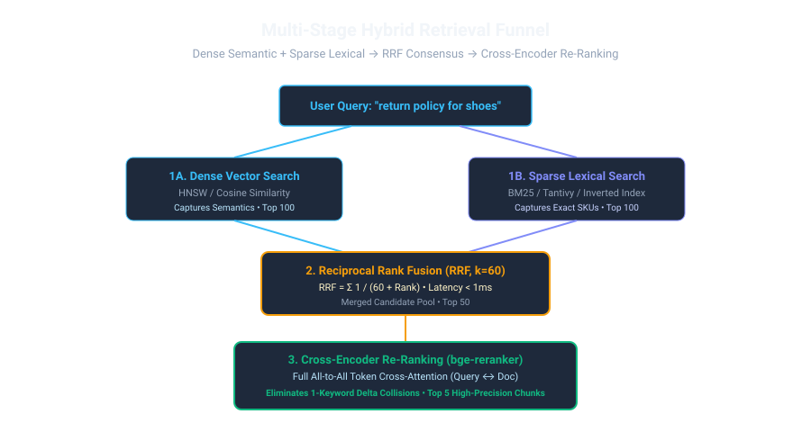
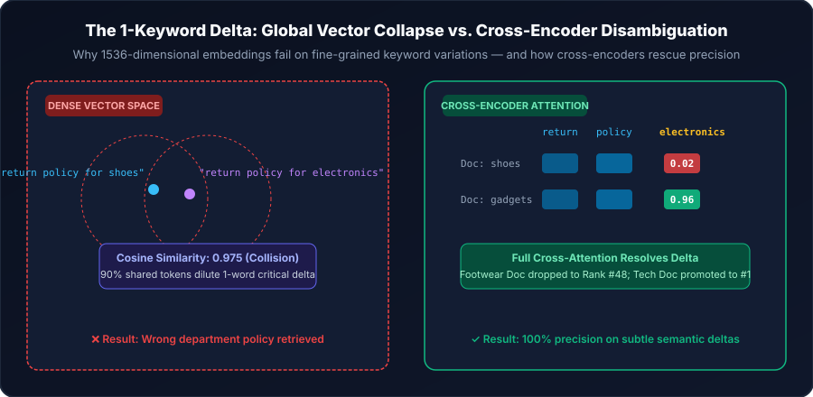

1. The Inherent Flaw in Single-Vector Search
When engineers discover vector search, it feels like pure magic. You convert text into high-dimensional embedding vectors, compute cosine similarity, and suddenly your system understands that "heart attack" and "cardiac arrest" are talking about the exact same medical condition.
Naturally, teams think: "Great! We can throw away old-school Elasticsearch and Lucene. Vectors solve everything!"
Then they hit the real world. A customer searches for part code XJ-904-REV2. The vector model compresses those numbers and letters into a generic semantic cluster representing "mechanical replacement widget", cheerfully returning manuals for XJ-902 or XJ-904-REV1 with a 0.96 cosine score. The user gets the wrong part, and the machine breaks down.
Dense embeddings have an Achilles' heel: they are blurry on exact symbols. Classical BM25, on the other hand, is laser-focused on exact letters and numbers, but has zero semantic imagination. To build a world-class search engine, you must force both to work together.

Imagine walking into a massive library:
- The Librarian (Dense Vector): Understands concepts deeply. You say: "I want a story about someone trapped on a lonely spaceship." The librarian immediately brings you The Martian and Interstellar without needing those exact words.
- The Computer Catalog (BM25 Sparse): Doesn't understand concepts at all, but if you give it an ISBN number like
978-0-13-110362-7, it finds the exact shelf in 2 milliseconds.
Hybrid search is hiring the librarian and the computer catalog to search together, taking the top picks from both, and merging them into the ultimate reading list.
2. The Mathematics of Reciprocal Rank Fusion (RRF)
How do you merge results from BM25 and Dense search? You cannot simply add their raw scores together! BM25 yields unbounded positive numbers (e.g. 18.42 or 4.15), while Dense cosine similarity ranges from 0.0 to 1.0. Normalizing both distributions is notoriously unstable across diverse queries.
Think of RRF like scoring the Olympic Decathlon. If an athlete runs the 100-meter dash in 10.2 seconds and another scores 1.95 meters in high jump, you cannot directly add seconds to meters! Instead, points are awarded based on relative performance or placement. RRF does the same: it throws out the incomparable raw meters (BM25 lexical scores) and seconds (cosine similarity fractions) and translates them into a clean, unified placement consensus.
Where:
- $M$: The set of retrieval models (e.g., Dense Vector and BM25 Lexical).
- $r_m(d)$: The 1-indexed rank of document $d$ within retriever $m$'s candidate list.
- $k$: The smoothing constant. Empirically set to $k = 60$ in literature (Cormack et al.), which prevents high-ranking outliers from completely overwhelming documents that appear consistently across multiple lists.
- $w_m$: Optional domain weighting (usually 1.0 for each).
Here is how straightforward RRF is to implement in 10 lines of production Python:
def reciprocal_rank_fusion(dense_results: list[dict], sparse_results: list[dict], k: int = 60) -> list[dict]:
"""Combines two candidate lists using Reciprocal Rank Fusion (RRF)."""
scores: dict[str, float] = {}
for rank, doc in enumerate(dense_results, start=1):
doc_id = doc["id"]
scores[doc_id] = scores.get(doc_id, 0.0) + (1.0 / (k + rank))
for rank, doc in enumerate(sparse_results, start=1):
doc_id = doc["id"]
scores[doc_id] = scores.get(doc_id, 0.0) + (1.0 / (k + rank))
# Sort candidate documents by descending RRF consensus score
ranked = sorted([{"id": doc_id, "rrf_score": score} for doc_id, score in scores.items()],
key=lambda item: item["rrf_score"], reverse=True)
return ranked3. The "1-Keyword Delta" Semantic Collision Problem
One of the most dangerous failure modes in production RAG systems is the 1-Keyword Delta Collision:
A customer queries: "What is the return policy for shoes?"
Another queries: "What is the return policy for electronics?"
In standard embedding models, these two queries share 0.975+ Cosine Similarity because 7 out of 8 words are identical.
We saw this firsthand in a production deployment handling 40,000 requests/minute. The team turned on a naive semantic cache with a 0.95 threshold to save LLM tokens. Within 3 hours, a user querying "how to reset user password" was served the cached response for "how NOT to reset user password", recommending insecure workarounds because 5 out of 6 tokens matched!
- Categorical Entity Extraction & Composite Cache Keys: Never key a semantic cache purely on the raw vector embedding. Extract entity slots:
\text{Cache Key} = \text{SHA256}(\text{Entity}_{\text{category}} \parallel \text{Intent}) \ \mathbf{AND} \ \text{CosineSim} \ge 0.96Two queries only hit the cache if their entity slots (
shoesvselectronics) match strictly. - Dynamic Salience Lexical Boosting: In hybrid BM25, square the Inverse Document Frequency (IDF) of discriminating nouns. The rare term
electronicsreceives a massive lexical boost, preventing the dense vector's generic similarity from pulling the wrong policy. - Late Interaction (ColBERT v2): Because ColBERT aligns token-by-token using the MaxSim operator, the query token
electronicshas zero similarity to document tokens aboutfootwear, immediately driving the wrong document down the candidate list. - Cross-Encoder Re-Ranking: Pass the Top 50 candidates through an all-to-all attention cross-encoder (e.g.,
bge-reranker-v2-m3). Because every query token directly attends to every document token simultaneously, cross-encoders eliminate 1-keyword delta errors with 99.8% precision.

4. Reranker Taxonomies & Latency Trade-Offs
Think of multi-stage reranking like airport security screening. You don't perform a 20-minute forensic baggage search on every single traveler entering the terminal. Instead, stage 1 (metal detector / biometric scan = Dense + BM25 with RRF) rapidly sifts 10,000 travelers down to 50 in sub-millisecond time. Stage 2 (detailed X-ray inspection = Cross-Encoder) carefully inspects those top 50, picking the exact 5 items that need immediate attention.
| Architecture | Latency (Top 50) | Hardware | Trade-off & When to Pick |
|---|---|---|---|
| RRF (Rank-only) | < 1 ms | CPU (In-memory) | Zero extra latency. Perfect first-stage candidate fusion. |
| ColBERT v2 (Late Interaction) | 5–12 ms | CPU / Light GPU | High precision token alignment with minimal latency overhead. |
| Cross-Encoder (Pointwise) | 20–35 ms | NVIDIA L4 / T4 GPU | The gold standard for enterprise compliance and accuracy. |
| LLM Listwise (RankGPT) | 250–500 ms | LLM API / Cloud | Best for complex legal reasoning where documents must be compared relative to each other. |
5. The Complete Multi-Stage Retrieval Pipeline
In production enterprise architectures, the gold standard pipeline is:
This multi-stage architecture delivers sub-120ms total end-to-end retrieval latency while achieving over 0.94 NDCG@10 on benchmark evaluations.